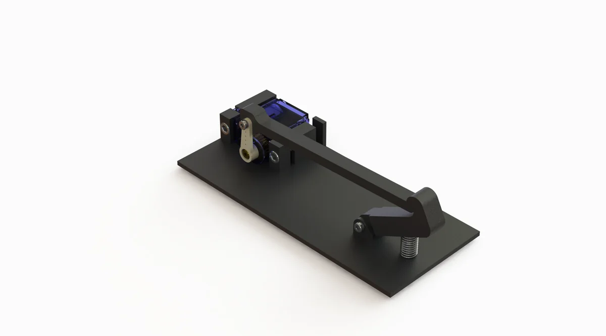
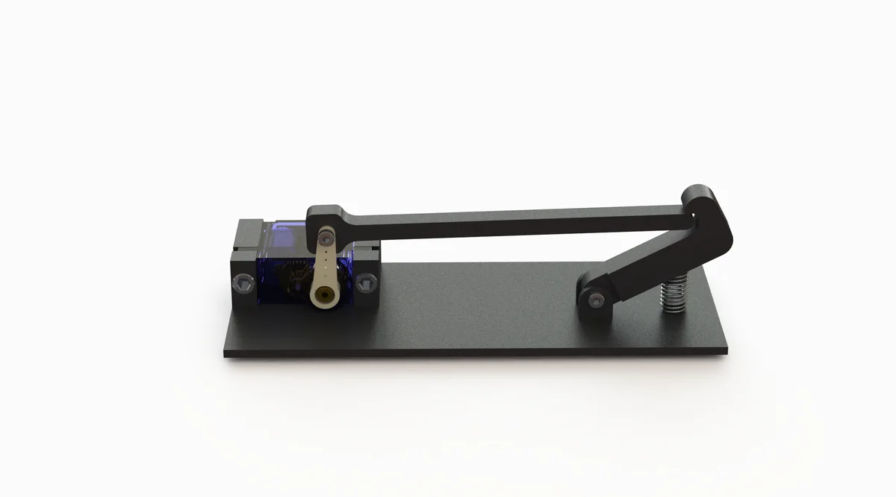
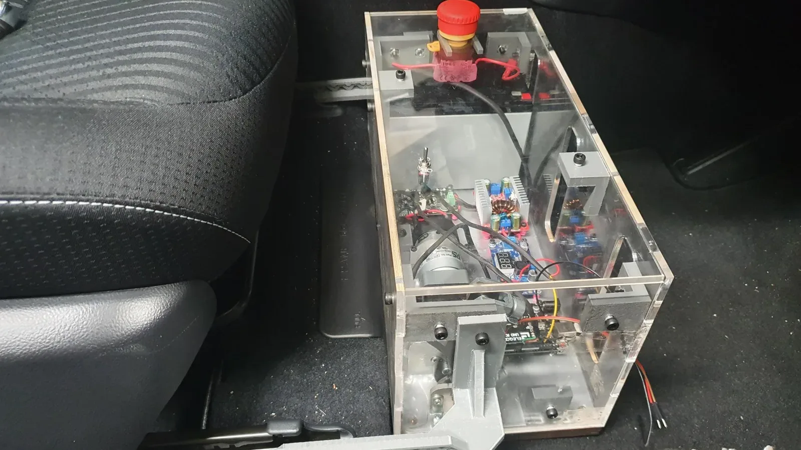
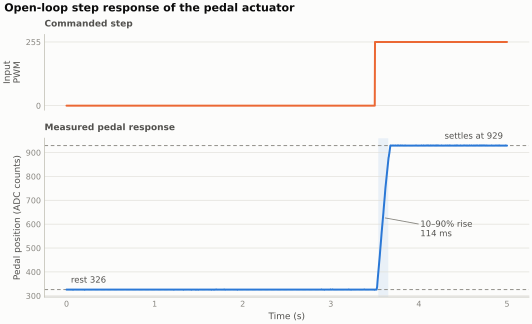
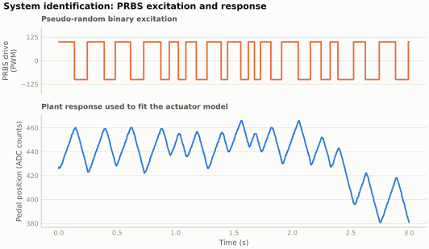
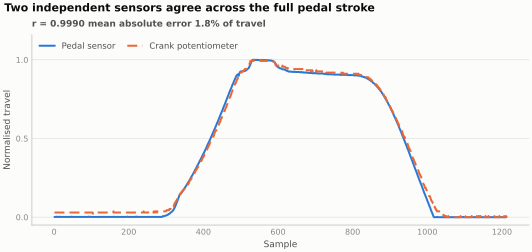
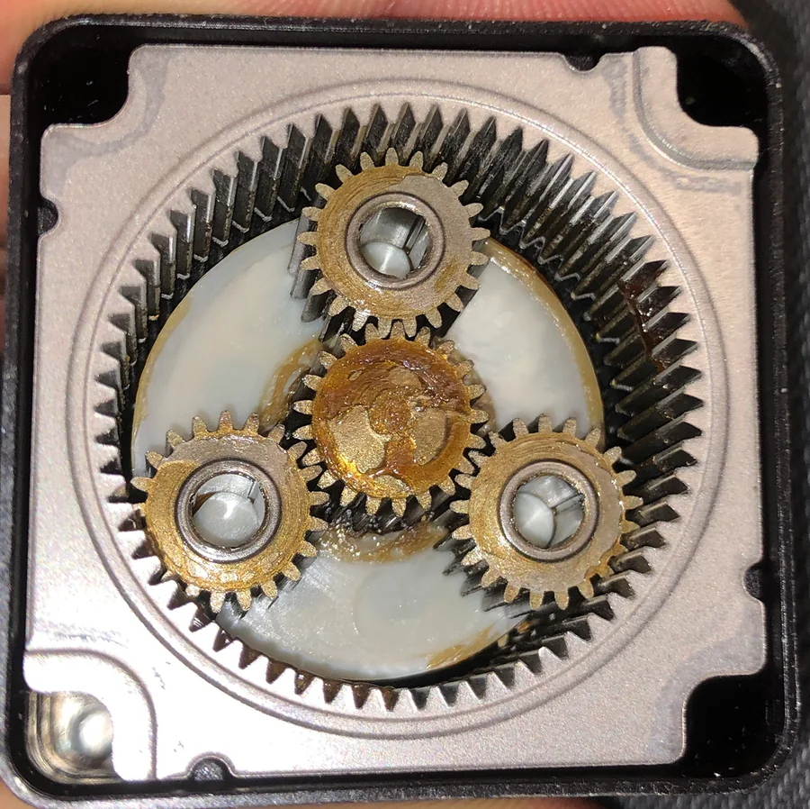
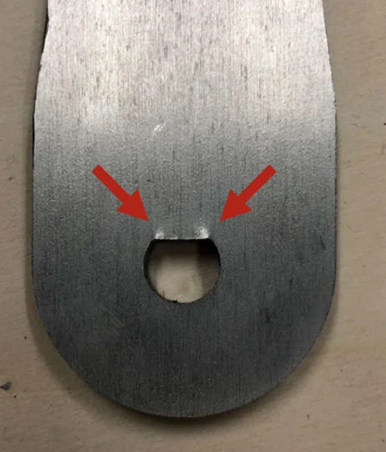

Controls · Embedded systems
A retrofit robot that operates a car's pedals
This robot sits where the driver's feet go and works the pedals directly. A conventional car can be automated without touching its wiring.



The problem
Testing autonomous driving logic normally needs a vehicle built for it. That is expensive, and it rules out the conventional cars already on the road. A retrofit actuator that presses the pedals needs no access to the vehicle's control network. It can be moved between vehicles and removed afterwards.
Replacing a driver's foot means handling position sensing, force delivery and closed-loop control in a package that fits in a footwell.

Characterising the actuator
The plant is a motor driving a linkage against a pedal with its own return spring and a non-linear feel. I needed to measure it before tuning a controller, so I started with system identification.
I ran a set of excitation signals through the actuator and logged the position response. These were steps at several amplitudes, ramps, random square waves and pseudo-random binary sequences (PRBS) at a range of dwell times. The PRBS runs were the most useful for fitting a model. They excite a broad band of frequencies without driving the actuator faster than the mechanics can follow.

Trusting the position signal
The pedal sensor sits on the pedal, so it measures pedal position directly. It is also exposed, and its zero moves when the mechanism is disturbed. I cross-checked it against a potentiometer on the actuator crank. That is mechanically protected but measures pedal position indirectly through the linkage.
Across a full stroke the two agree to within about two per cent of travel. The crank signal can therefore serve as a redundant channel, and a disagreement between the two indicates a fault.

What broke
Two mechanical parts failed. The gearbox developed backlash, visible in the position trace as a dead band at every direction reversal. Pedal modulation is mostly small reversals, so this matters. A crank arm also cracked at the pin slot, where the section is thinnest and the load is highest.


Both failures only appeared after the rig had done real cycles. The dead band showed up in the sensor trace before the crack appeared, while the arm still looked fine.
Measuring first
System identification took time at the start. It saved more later, because I tuned the controller against measured data.
← All projects